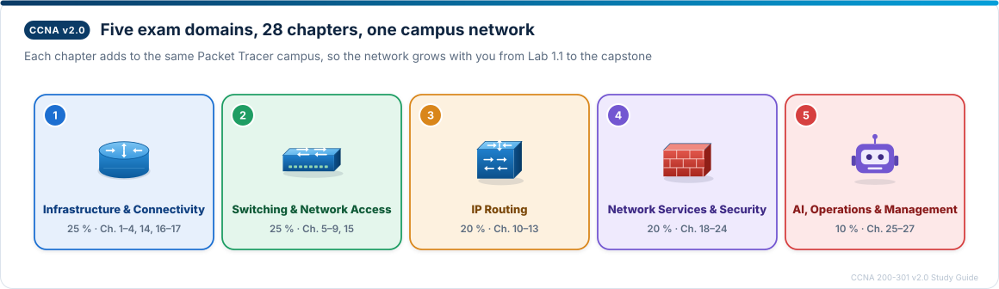

Free · open · hands-on
Pass the CCNA 200-301 v2.0 by building one network, chapter by chapter.
28 chapters mapped to every v2.0 exam objective, Packet Tracer labs on a single growing campus, practice questions with full answers — and 104 hand-built diagrams that show how it really works.
28chapters
104figures
392quiz questions
5exam domains
Your progress
Tick “Mark chapter as done” at the top of each chapter. Progress is saved in this browser only.

Network Infrastructure & Connectivity
25 %Switching & Network Access
25 %IP Routing
20 %Network Services & Security
20 %AI, Operations & Management
10 %Final Review
🤖 How this guide was made
All content, labs and figures were generated by Claude (Anthropic) from the official Cisco CCNA 200-301 v2.0 exam topics, directed and reviewed by Ayush Hamal. Verify commands against Cisco documentation and run every lab yourself.
📄 License
Guide and figures: CC BY-NC-SA 4.0 · tools: MIT. Cisco, CCNA and Packet Tracer are trademarks of Cisco Systems, Inc.; this is an independent resource.